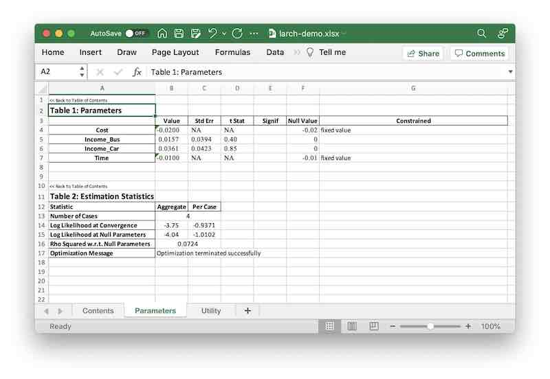

Choice Models#
import larch as lx
In this guide, we’ll take a look at building a discrete choice model using Larch. We assume you have a decent grasp of the fundamentals of choice modeling – if not, we suggest reading the Discrete Choice Modeling section of the Python for Transportation Modeling course.
Some addition advanced or detailed topics are broken out into seperate guides:
The examples below work with the tiny dataset introduced in the Data Fundamentals section.
Show code cell content
# HIDDEN
df_ca = pd.read_csv("example-data/tiny_idca.csv")
cats = df_ca["altid"].astype(pd.CategoricalDtype(["Car", "Bus", "Walk"])).cat
df_ca["altnum"] = cats.codes + 1
df_ca = df_ca.set_index(["caseid", "altnum"])
data = lx.Dataset.construct.from_idca(df_ca.sort_index(), fill_missing=0)
data = data.drop_vars("_avail_")
data["ChosenCode"] = (data["Chosen"] * data["Chosen"].altnum).sum("altnum")
data.coords["alt_names"] = lx.DataArray(
cats.categories, dims=("altnum"), coords={"altnum": data.altnum}
)
alts = dict(zip(data["altnum"].values, data["alt_names"].values))
for i, k in alts.items():
data[f"{k}Time"] = data["Time"].sel(altnum=i)
/opt/hostedtoolcache/Python/3.10.14/x64/lib/python3.10/site-packages/xarray/core/duck_array_ops.py:215: RuntimeWarning: invalid value encountered in cast
return data.astype(dtype, **kwargs)
data
<xarray.Dataset> Size: 603B
Dimensions: (caseid: 4, altnum: 3)
Coordinates:
* caseid (caseid) int64 32B 1 2 3 4
* altnum (altnum) int8 3B 1 2 3
alt_names (altnum) object 24B 'Car' 'Bus' 'Walk'
Data variables:
altid (caseid, altnum) object 96B 'Car' 'Bus' 'Walk' ... 'Bus' 'Walk'
Income (caseid) int64 32B 30000 30000 40000 50000
Time (caseid, altnum) int64 96B 30 40 20 25 35 0 40 50 30 15 20 10
Cost (caseid, altnum) int64 96B 150 100 0 125 100 ... 75 0 225 150 0
Chosen (caseid, altnum) int64 96B 1 0 0 0 1 0 0 0 1 0 0 1
ChosenCode (caseid) int64 32B 1 2 3 3
CarTime (caseid) int64 32B 30 25 40 15
BusTime (caseid) int64 32B 40 35 50 20
WalkTime (caseid) int64 32B 20 0 30 10
Attributes:
_caseid_: caseid
_altid_: altnumThe basic structure of a choice model in Larch is contained in the
Model object.
m = lx.Model(data)
Alternatives#
The universe of possible alternatives is generally defined by the data object, not in the
model itself. If the data is defined simply by a Dataset, the _altid_ attribute of that
dataset indicates the name of the dimension that represents the alternatives.
data.attrs["_altid_"]
'altnum'
For convenience, Larch adds a dc accessor to Datasets, to manipulate the discrete choice
facets of the data. This allows access to the alternative codes (the coordinate vector for
the alts dimension) via the altids method, and a dictionary mapping codes to names in the
alts_mapping property.
data.dc.altids()
Index([1, 2, 3], dtype='int8', name='altnum')
data.dc.alts_mapping
{1: 'Car', 2: 'Bus', 3: 'Walk'}
If you have a dataset that is missing alternative codes,
or if you want to replace the existing alternative codes,
you can use the set_altids method.
data.dc.set_altids([1, 2, 3, 4], dim_name="newalts")
<xarray.Dataset> Size: 635B
Dimensions: (caseid: 4, altnum: 3, newalts: 4)
Coordinates:
* caseid (caseid) int64 32B 1 2 3 4
* altnum (altnum) int8 3B 1 2 3
alt_names (altnum) object 24B 'Car' 'Bus' 'Walk'
* newalts (newalts) int64 32B 1 2 3 4
Data variables:
altid (caseid, altnum) object 96B 'Car' 'Bus' 'Walk' ... 'Bus' 'Walk'
Income (caseid) int64 32B 30000 30000 40000 50000
Time (caseid, altnum) int64 96B 30 40 20 25 35 0 40 50 30 15 20 10
Cost (caseid, altnum) int64 96B 150 100 0 125 100 ... 75 0 225 150 0
Chosen (caseid, altnum) int64 96B 1 0 0 0 1 0 0 0 1 0 0 1
ChosenCode (caseid) int64 32B 1 2 3 3
CarTime (caseid) int64 32B 30 25 40 15
BusTime (caseid) int64 32B 40 35 50 20
WalkTime (caseid) int64 32B 20 0 30 10
Attributes:
_caseid_: caseid
_altid_: newaltsChoices#
The dependent variable for a discrete choice model is an array that describes the choices. In Larch, there are three different ways to indicate choices, by assigning to different attributes:
m.choice_ca_var
: The choices are given by indicator values (typically but not
neccessarily dummy variables) in an idca variable.
m.choice_co_code
: The choices are given by altid values in an idco variable.
These choice codes are then converted to binary indicators
by Larch.
m.choice_co_vars
: The choices are given by indicator values (typically but not
neccessarily dummy variables) in multiple idco variables,
one for each alternative.
Given the dataset (which has all these formats defined), all the following choice definitions result in the same choice representation:
m.choice_co_code = "ChosenCode"
m.choice_co_vars = {
1: "ChosenCode == 1",
2: "ChosenCode == 2",
3: "ChosenCode == 3",
}
m.choice_ca_var = "Chosen"
After setting the choice definition, the loaded or computed choice array
should be available as the 'ch' DataArray in the model’s
dataset.
m.dataset["ch"]
<xarray.DataArray 'ch' (caseid: 4, altnum: 3)> Size: 96B
array([[1, 0, 0],
[0, 1, 0],
[0, 0, 1],
[0, 0, 1]])
Coordinates:
* caseid (caseid) int64 32B 1 2 3 4
* altnum (altnum) int8 3B 1 2 3
alt_names (altnum) object 24B 'Car' 'Bus' 'Walk'Availability#
In addition to the choices, we can also define an array that describes the availability of the various alternatives. Unlike the choices, for the availability factors we expect that we’ll need to toggle the availability on or off for potentially every alternative in each case, so there’s only two ways to define availability, by assigning to attributes:
m.availability_ca_var
: The availability of alternatives is given by binary values
(booleans, or equivalent integers) in an idca variable.
m.availability_co_vars
: The availability of alternatives is given by binary values
(booleans, or equivalent integers) in multiple idco variables,
one for each alternative.
Given the dataset, both of the following availability definitions result in the same availability representation:
m.availability_ca_var = "Time > 0"
m.availability_co_vars = {
1: True,
2: "BusTime > 0",
3: "WalkTime > 0",
}
After setting the availability definition, the loaded or computed availability array
should be available as the 'av' DataArray in the model’s
dataset.
m.dataset["av"]
<xarray.DataArray 'av' (caseid: 4, altnum: 3)> Size: 12B
array([[1, 1, 1],
[1, 1, 0],
[1, 1, 1],
[1, 1, 1]], dtype=int8)
Coordinates:
* caseid (caseid) int64 32B 1 2 3 4
* altnum (altnum) int8 3B 1 2 3
alt_names (altnum) object 24B 'Car' 'Bus' 'Walk'Utility Functions#
Choice models in Larch rely on utility expressions that are
linear-in-parameters functions, which combine
parameters P and data
X. You can attach these function
expressions to the model in two ways:
m.utility_ca
: A linear function containing generic expressions
that are evaluated against the idca portion of the dataset.
These expression can technically also reference idco variables,
but to define a well-specified choice model with identifiable
parameters, each data term will need at least one idca
component.
m.utility_co
: A mapping of alternative-specific expressions that are evaluated
against only the idco portion of the dataset. Each key gives
an alternative id, and the values are linear functions.
These two utility function definitions are not mutually exclusive, and you can mix both types of functions in the same model.
from larch import P, X
m.utility_ca = P.Time * X.Time + P.Cost * X.Cost
m.utility_co = {
1: P.Income_Car * X.Income / 1000,
2: P.Income_Bus * X.Income / 1000,
}
The computed values for the utility function can be accessed using
the utility method, which also permits
the user to set new values for various model parameters.
m.utility(
{"Time": -0.01, "Cost": -0.02, "Income_Car": 0.1},
return_format="dataarray",
)
<xarray.DataArray (caseid: 4, nodeid: 4)> Size: 128B
array([[-0.3 , -2.4 , -0.2 , 0.50093705],
[ 0.25 , -2.35 , -inf, 0.32164469],
[ 1.1 , -2. , -0.3 , 1.3559175 ],
[ 0.35 , -3.2 , -0.1 , 0.86063728]])
Coordinates:
* caseid (caseid) int64 32B 1 2 3 4
* nodeid (nodeid) int64 32B 1 2 3 0
node_name (nodeid) <U6 96B 'Car' 'Bus' 'Walk' '_root_'Data Preparation#
Larch works with two “tiers” of data:
m.datatree
: A DataTree that holds the raw data used for the model. This can
consist of just a single Dataset, (which is automatically converted
into a one-node tree when you assign it to this attribute) or multiple
related datasets linked together using the sharrow library.
m.dataset
: The assembled arrays actually used in calculation, stored
as a Dataset that has variables for various required data elements
and dimensions structured to support the model design.
The dataset is wiped out when any aspect of the model structure is
changed, and rebuilt as needed for computation. For
particular applications that require specialized
optimization, the dataset can be provided exogenously after the
model stucture is finalized, but generally
it will be convenient for users to let Larch build the dataset
automatically from a datatree.
m.datatree
<larch.dataset.DataTree>
datasets:
- main
relationships: none
m.dataset
<xarray.Dataset> Size: 447B
Dimensions: (caseid: 4, altnum: 3, var_co: 1, var_ca: 2)
Coordinates:
* caseid (caseid) int64 32B 1 2 3 4
* altnum (altnum) int8 3B 1 2 3
alt_names (altnum) object 24B 'Car' 'Bus' 'Walk'
* var_co (var_co) <U6 24B 'Income'
* var_ca (var_ca) <U4 32B 'Cost' 'Time'
Data variables:
co (caseid, var_co) float64 32B 3e+04 3e+04 4e+04 5e+04
ca (caseid, altnum, var_ca) float64 192B 150.0 30.0 ... 0.0 10.0
ch (caseid, altnum) int64 96B 1 0 0 0 1 0 0 0 1 0 0 1
av (caseid, altnum) int8 12B 1 1 1 1 1 0 1 1 1 1 1 1
Attributes:
_caseid_: caseid
_altid_: altnumNesting Structures#
By default, a model in Larch is assumed to be a simple multinomial
logit model, unless a nesting structure is defined. That structure
is defined in a model’s graph.
m.graph
/opt/hostedtoolcache/Python/3.10.14/x64/lib/python3.10/site-packages/larch/model/tree.py:790: UserWarning: neither pydot nor pygraphviz modules are installed, unable to draw nesting tree
xml = self.__xml__()
<larch.model.tree.NestingTree at 0x7fd171fdd390>
Adding a nest can be accomplished the the new_node method,
which allows you to give a nesting node’s child codes, a name, and attach a logsum parameter.
z = m.graph.new_node(parameter="Mu_Motorized", children=[1, 2], name="Motorized")
m.graph
<larch.model.tree.NestingTree at 0x7fd171fdd390>
The return value of new_node
is the code number of the new nest. This is assigned automatically so
as to not overlap with any other alternatives or nests. We can use this
to develop multi-level nesting structures, by putting that new code
number as the child for yet another new nest.
m.graph.new_node(parameter="Mu_Omni", children=[z, 3], name="Omni")
m.graph
<larch.model.tree.NestingTree at 0x7fd171fdd390>
Nothing in Larch prevents you from overloading the nesting structure with
degenerate nests, as shown above. You may have difficult with estimating
parameters if you are not careful with such complex structures. If you
need to remove_node, you
can do so by giving its code–but you’ll likely find you’ll be much better off
just fixing your code and starting over, as node removal can have some odd
side effects for complex structures.
m.graph.remove_node(5)
m.graph
<larch.model.tree.NestingTree at 0x7fd171fdd390>
Parameter Estimation#
Larch can automatically find all the model parameters contained in the model specification, so we don’t need to address them separately unless we want to modify any defaults.
We can review the parameters Larch has found, as well as the current values
set for them, in the parameter frame, or pf.
m.pf
| value | best | initvalue | minimum | maximum | nullvalue | |
|---|---|---|---|---|---|---|
| param_name | ||||||
| Cost | -0.02 | -0.02 | 0.0 | -inf | inf | 0.0 |
| Income_Bus | 0.00 | NaN | 0.0 | -inf | inf | 0.0 |
| Income_Car | 0.10 | NaN | 0.0 | -inf | inf | 0.0 |
| Mu_Motorized | 1.00 | NaN | 1.0 | 0.001 | 1.0 | 1.0 |
| Time | -0.01 | -0.01 | 0.0 | -inf | inf | 0.0 |
If we want to set certain parameters to be constrained to be certain values,
that can be accomplished with the plock method.
Because our sample data has so few observations, it won’t be possible to estimate
values for all four parameters, so we can assert values for two of them.
m.plock({"Time": -0.01, "Cost": -0.02})
m.pf
| value | best | initvalue | minimum | maximum | nullvalue | |
|---|---|---|---|---|---|---|
| param_name | ||||||
| Cost | -0.02 | -0.02 | -0.02 | -inf | inf | 0.0 |
| Income_Bus | 0.00 | NaN | 0.00 | -inf | inf | 0.0 |
| Income_Car | 0.10 | NaN | 0.00 | -inf | inf | 0.0 |
| Mu_Motorized | 1.00 | NaN | 1.00 | 0.001 | 1.0 | 1.0 |
| Time | -0.01 | -0.01 | -0.01 | -inf | inf | 0.0 |
The default infinite bounds on the remaining parameters can be problematic
for some optimization algorithms, so it’s usually good practice to set large
but finite limits for those values. The set_cap method
can do just that, setting a minimum and maximum value for all the parameters
that otherwise have bounds outside the cap.
m.set_cap(100)
m.pf
| value | best | initvalue | minimum | maximum | nullvalue | |
|---|---|---|---|---|---|---|
| param_name | ||||||
| Cost | -0.02 | -0.02 | -0.02 | -inf | inf | 0.0 |
| Income_Bus | 0.00 | NaN | 0.00 | -100.000 | 100.0 | 0.0 |
| Income_Car | 0.10 | NaN | 0.00 | -100.000 | 100.0 | 0.0 |
| Mu_Motorized | 1.00 | NaN | 1.00 | 0.001 | 1.0 | 1.0 |
| Time | -0.01 | -0.01 | -0.01 | -inf | inf | 0.0 |
To actually develop maximum likelihood estimates for the remaining
unconstrained parameters, use the
maximize_loglike method.
m.maximize_loglike()
Iteration 006 [Optimization terminated successfully]
Best LL = -3.74823900518063
| value | best | initvalue | minimum | maximum | nullvalue | |
|---|---|---|---|---|---|---|
| param_name | ||||||
| Cost | -0.02000 | -0.02000 | -0.02 | -inf | inf | 0.0 |
| Income_Bus | 0.01573 | 0.01573 | 0.00 | -100.000 | 100.0 | 0.0 |
| Income_Car | 0.03612 | 0.03612 | 0.00 | -100.000 | 100.0 | 0.0 |
| Mu_Motorized | 1.00000 | 1.00000 | 1.00 | 0.001 | 1.0 | 1.0 |
| Time | -0.01000 | -0.01000 | -0.01 | -inf | inf | 0.0 |
| key | value | ||||||||||||
|---|---|---|---|---|---|---|---|---|---|---|---|---|---|
| x |
| ||||||||||||
| logloss | 0.9370597512951575 | ||||||||||||
| d_logloss |
| ||||||||||||
| nit | 6 | ||||||||||||
| nfev | 14 | ||||||||||||
| njev | 6 | ||||||||||||
| status | 0 | ||||||||||||
| message | 'Optimization terminated successfully' | ||||||||||||
| success | True | ||||||||||||
| elapsed_time | 0:00:00.042592 | ||||||||||||
| method | 'slsqp' | ||||||||||||
| n_cases | 4 | ||||||||||||
| iteration_number | 6 | ||||||||||||
| loglike | -3.74823900518063 |
In a Jupyter notebook, this method displays a live-updating view of the progress of the optmization algorithm, so that the analyst can interrupt if something looks wrong.
The maximize_loglike method does
not include the calculation of parameter covariance matrixes, standard
errors, or t-statistics. For large models, this can be a computationally
expensive process, and it is often but not always necessary. Those
computatations are made in the
calculate_parameter_covariance
method instead. Once completed, things like t-statistics and standard
errors are available in the parameter frame.
m.calculate_parameter_covariance()
m.pf
| value | best | initvalue | minimum | maximum | nullvalue | |
|---|---|---|---|---|---|---|
| param_name | ||||||
| Cost | -0.02000 | -0.02000 | -0.02 | -inf | inf | 0.0 |
| Income_Bus | 0.01573 | 0.01573 | 0.00 | -100.000 | 100.0 | 0.0 |
| Income_Car | 0.03612 | 0.03612 | 0.00 | -100.000 | 100.0 | 0.0 |
| Mu_Motorized | 1.00000 | 1.00000 | 1.00 | 0.001 | 1.0 | 1.0 |
| Time | -0.01000 | -0.01000 | -0.01 | -inf | inf | 0.0 |
Overspecification#
Overspecification in a discrete choice model occurs when the model includes more
explanatory variables (independent variables) than necessary or relevant for
accurately predicting choice behaviors. A particular computational flavor of
overspecification is multicollinearity, which is when independent variables
are highly (or perfectly) correlated with each other. This makes it difficult
to estimate the true effect of each variable on the dependent variable (choice
behavior) and can lead to unstable parameter estimates. To demonstrate this,
we can create a copy of the model and add an Income_Walk term to the utility
function.
m2 = m.copy()
m2.utility_co[3] = P.Income_Walk * X.Income / 1000
The three Income_* terms now in the model now form a closed loop, such that
the sum of all three of these terms is always 1. The result is an overspecified
model. Larch doesn’t stop you from doing this, and may even estimate parameters
successfully with the maximize_loglike function.
m2.maximize_loglike()
Iteration 001 [Optimization terminated successfully]
Best LL = -3.7482389707777224
| value | best | initvalue | minimum | maximum | nullvalue | |
|---|---|---|---|---|---|---|
| param_name | ||||||
| Cost | -2.000000e-02 | -2.000000e-02 | -0.02 | -inf | inf | 0.0 |
| Income_Bus | 1.572494e-02 | 1.572494e-02 | 0.00 | -100.000 | 100.0 | 0.0 |
| Income_Car | 3.612586e-02 | 3.612586e-02 | 0.00 | -100.000 | 100.0 | 0.0 |
| Income_Walk | -7.774388e-07 | -7.774388e-07 | 0.00 | -inf | inf | 0.0 |
| Mu_Motorized | 1.000000e+00 | 1.000000e+00 | 1.00 | 0.001 | 1.0 | 1.0 |
| Time | -1.000000e-02 | -1.000000e-02 | -0.01 | -inf | inf | 0.0 |
/opt/hostedtoolcache/Python/3.10.14/x64/lib/python3.10/site-packages/larch/model/optimization.py:351: UserWarning: slsqp may not play nicely with unbounded parameters
if you get poor results, consider setting global bounds with model.set_cap()
warnings.warn( # infinite bounds # )
| key | value | ||||||||||||||
|---|---|---|---|---|---|---|---|---|---|---|---|---|---|---|---|
| x |
| ||||||||||||||
| logloss | 0.9370597426944306 | ||||||||||||||
| d_logloss |
| ||||||||||||||
| nit | 1 | ||||||||||||||
| nfev | 5 | ||||||||||||||
| njev | 1 | ||||||||||||||
| status | 0 | ||||||||||||||
| message | 'Optimization terminated successfully' | ||||||||||||||
| success | True | ||||||||||||||
| elapsed_time | 0:00:00.023643 | ||||||||||||||
| method | 'slsqp' | ||||||||||||||
| n_cases | 4 | ||||||||||||||
| iteration_number | 1 | ||||||||||||||
| loglike | -3.7482389707777224 |
However, when you attempt to calculate the standard errors of the estimates (i.e., the parameter covariance matrix), you may get infinite, NaN, or absurdly large values. Larch also may emit a warning here, to alert you to a possible overspecification problem.
m2.calculate_parameter_covariance()
m2.parameter_summary()
/tmp/ipykernel_5238/1346125230.py:1: PossibleOverspecification: Model is possibly over-specified (hessian is nearly singular).
m2.calculate_parameter_covariance()
| Value | Std Err | t Stat | Signif | Null Value | Constrained | |
|---|---|---|---|---|---|---|
| Parameter | ||||||
| Cost | -0.0200 | 0.00 | NA | 0.00 | fixed value | |
| Income_Bus | 0.0157 | 621. | 0.00 | 0.00 | ||
| Income_Car | 0.0361 | 621. | 0.00 | 0.00 | ||
| Income_Walk | -7.77e-07 | 621. | -0.00 | 0.00 | ||
| Mu_Motorized | 1.00 | 0.00 | NA | 1.00 | Mu_Motorized ≤ 1.0 | |
| Time | -0.0100 | 0.00 | NA | 0.00 | fixed value |
If you get such a warning, you can check the model’s possible_overspecification attribute,
which may give you a hint of the problem. Here we see that the three Income parameters
are highlighted in red.
m2.possible_overspecification
---------------------------------------------------------------------------
ImportError Traceback (most recent call last)
File /opt/hostedtoolcache/Python/3.10.14/x64/lib/python3.10/site-packages/IPython/core/formatters.py:347, in BaseFormatter.__call__(self, obj)
345 method = get_real_method(obj, self.print_method)
346 if method is not None:
--> 347 return method()
348 return None
349 else:
File /opt/hostedtoolcache/Python/3.10.14/x64/lib/python3.10/site-packages/pandas/io/formats/style.py:405, in Styler._repr_html_(self)
400 """
401 Hooks into Jupyter notebook rich display system, which calls _repr_html_ by
402 default if an object is returned at the end of a cell.
403 """
404 if get_option("styler.render.repr") == "html":
--> 405 return self.to_html()
406 return None
File /opt/hostedtoolcache/Python/3.10.14/x64/lib/python3.10/site-packages/pandas/io/formats/style.py:1345, in Styler.to_html(self, buf, table_uuid, table_attributes, sparse_index, sparse_columns, bold_headers, caption, max_rows, max_columns, encoding, doctype_html, exclude_styles, **kwargs)
1342 obj.set_caption(caption)
1344 # Build HTML string..
-> 1345 html = obj._render_html(
1346 sparse_index=sparse_index,
1347 sparse_columns=sparse_columns,
1348 max_rows=max_rows,
1349 max_cols=max_columns,
1350 exclude_styles=exclude_styles,
1351 encoding=encoding or get_option("styler.render.encoding"),
1352 doctype_html=doctype_html,
1353 **kwargs,
1354 )
1356 return save_to_buffer(
1357 html, buf=buf, encoding=(encoding if buf is not None else None)
1358 )
File /opt/hostedtoolcache/Python/3.10.14/x64/lib/python3.10/site-packages/pandas/io/formats/style_render.py:204, in StylerRenderer._render_html(self, sparse_index, sparse_columns, max_rows, max_cols, **kwargs)
192 def _render_html(
193 self,
194 sparse_index: bool,
(...)
198 **kwargs,
199 ) -> str:
200 """
201 Renders the ``Styler`` including all applied styles to HTML.
202 Generates a dict with necessary kwargs passed to jinja2 template.
203 """
--> 204 d = self._render(sparse_index, sparse_columns, max_rows, max_cols, " ")
205 d.update(kwargs)
206 return self.template_html.render(
207 **d,
208 html_table_tpl=self.template_html_table,
209 html_style_tpl=self.template_html_style,
210 )
File /opt/hostedtoolcache/Python/3.10.14/x64/lib/python3.10/site-packages/pandas/io/formats/style_render.py:161, in StylerRenderer._render(self, sparse_index, sparse_columns, max_rows, max_cols, blank)
147 def _render(
148 self,
149 sparse_index: bool,
(...)
153 blank: str = "",
154 ):
155 """
156 Computes and applies styles and then generates the general render dicts.
157
158 Also extends the `ctx` and `ctx_index` attributes with those of concatenated
159 stylers for use within `_translate_latex`
160 """
--> 161 self._compute()
162 dxs = []
163 ctx_len = len(self.index)
File /opt/hostedtoolcache/Python/3.10.14/x64/lib/python3.10/site-packages/pandas/io/formats/style_render.py:256, in StylerRenderer._compute(self)
254 r = self
255 for func, args, kwargs in self._todo:
--> 256 r = func(self)(*args, **kwargs)
257 return r
File /opt/hostedtoolcache/Python/3.10.14/x64/lib/python3.10/site-packages/pandas/io/formats/style.py:1726, in Styler._apply(self, func, axis, subset, **kwargs)
1724 axis = self.data._get_axis_number(axis)
1725 if axis == 0:
-> 1726 result = data.apply(func, axis=0, **kwargs)
1727 else:
1728 result = data.T.apply(func, axis=0, **kwargs).T # see GH 42005
File /opt/hostedtoolcache/Python/3.10.14/x64/lib/python3.10/site-packages/pandas/core/frame.py:10361, in DataFrame.apply(self, func, axis, raw, result_type, args, by_row, engine, engine_kwargs, **kwargs)
10347 from pandas.core.apply import frame_apply
10349 op = frame_apply(
10350 self,
10351 func=func,
(...)
10359 kwargs=kwargs,
10360 )
> 10361 return op.apply().__finalize__(self, method="apply")
File /opt/hostedtoolcache/Python/3.10.14/x64/lib/python3.10/site-packages/pandas/core/apply.py:916, in FrameApply.apply(self)
913 elif self.raw:
914 return self.apply_raw(engine=self.engine, engine_kwargs=self.engine_kwargs)
--> 916 return self.apply_standard()
File /opt/hostedtoolcache/Python/3.10.14/x64/lib/python3.10/site-packages/pandas/core/apply.py:1063, in FrameApply.apply_standard(self)
1061 def apply_standard(self):
1062 if self.engine == "python":
-> 1063 results, res_index = self.apply_series_generator()
1064 else:
1065 results, res_index = self.apply_series_numba()
File /opt/hostedtoolcache/Python/3.10.14/x64/lib/python3.10/site-packages/pandas/core/apply.py:1081, in FrameApply.apply_series_generator(self)
1078 with option_context("mode.chained_assignment", None):
1079 for i, v in enumerate(series_gen):
1080 # ignore SettingWithCopy here in case the user mutates
-> 1081 results[i] = self.func(v, *self.args, **self.kwargs)
1082 if isinstance(results[i], ABCSeries):
1083 # If we have a view on v, we need to make a copy because
1084 # series_generator will swap out the underlying data
1085 results[i] = results[i].copy(deep=False)
File /opt/hostedtoolcache/Python/3.10.14/x64/lib/python3.10/site-packages/larch/util/overspec_viewer.py:263, in OverspecView._absolute_background_gradient(s, cmap, low, high, text_color_threshold, vmin, vmax)
260 msg = "`text_color_threshold` must be a value from 0 to 1."
261 raise ValueError(msg)
--> 263 with _mpl(Styler.background_gradient) as (plt, matplotlib):
264 smin = np.nanmin(np.absolute(s.to_numpy())) if vmin is None else vmin
265 smax = np.nanmax(np.absolute(s.to_numpy())) if vmax is None else vmax
File /opt/hostedtoolcache/Python/3.10.14/x64/lib/python3.10/contextlib.py:135, in _GeneratorContextManager.__enter__(self)
133 del self.args, self.kwds, self.func
134 try:
--> 135 return next(self.gen)
136 except StopIteration:
137 raise RuntimeError("generator didn't yield") from None
File /opt/hostedtoolcache/Python/3.10.14/x64/lib/python3.10/site-packages/pandas/io/formats/style.py:98, in _mpl(func)
96 yield plt, mpl
97 else:
---> 98 raise ImportError(f"{func.__name__} requires matplotlib.")
ImportError: background_gradient requires matplotlib.
<larch.util.overspec_viewer.OverspecView at 0x7fd171bc1420>
Reporting#
Larch includes a variety of pre-packaged and a la carte reporting options.
Commonly used report tables are available directly in a Jupyter notebook through a selection of reporting functions.
m.parameter_summary()
| Value | Std Err | t Stat | Signif | Null Value | Constrained | |
|---|---|---|---|---|---|---|
| Parameter | ||||||
| Cost | -0.0200 | 0.00 | NA | 0.00 | fixed value | |
| Income_Bus | 0.0157 | 0.0394 | 0.40 | 0.00 | ||
| Income_Car | 0.0361 | 0.0423 | 0.85 | 0.00 | ||
| Mu_Motorized | 1.00 | NA | NA | 1.00 | Mu_Motorized ≤ 1.0 | |
| Time | -0.0100 | 0.00 | NA | 0.00 | fixed value |
m.estimation_statistics()
| Statistic | Aggregate | Per Case |
|---|---|---|
| Number of Cases | 4 | |
| Log Likelihood at Convergence | -3.75 | -0.94 |
| Log Likelihood at Null Parameters | -4.04 | -1.01 |
| Rho Squared w.r.t. Null Parameters | 0.072 | |
To save a model report to an Excel file, use the to_xlsx method.
# import larch.util.excel
# m.to_xlsx("/tmp/larch-demo.xlsx")
